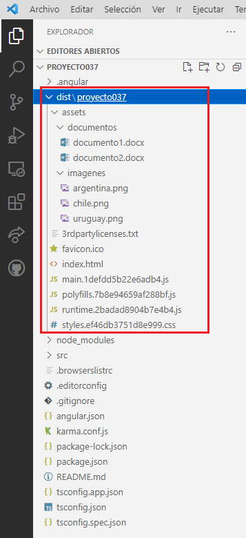

Las carpetas '<Nombre del proyecto>\dist' no se generan inmediatamente al crear un proyecto Angular, sino cuando compilamos por primera vez:
ng build
Luego de compilar el proyecto Angular por primera vez podemos ver que se han generado las carpetas 'proyecto37\dist' dependiendo de la raiz:
Dentro de la carpeta 'proyecto37' se localizan todos los archivos y carpeta 'assets' que deben ser subidos al servidor web.
index.html El archivo index.html no es exactamente el mismo archivo que se encuentra en la raiz del proyecto, sino con los script necesarios de la aplicación Angular:
<!DOCTYPE html><html lang="en"><head> <meta charset="utf-8"> <title>Proyecto037</title> <base href="/angular/proyecto037/"> <meta name="viewport" content="width=device-width, initial-scale=1"> <link rel="icon" type="image/x-icon" href="favicon.ico"> <link rel="stylesheet" href="styles.ef46db3751d8e999.css"></head> <body> <app-root></app-root> <script src="runtime.2badad8904b7e4b4.js" type="module"></script> <script src="polyfills.7b8e94659af288bf.js" type="module"> </script><script src="main.1defdd5b22e6adb4.js" type="module"></script> </body></html>
Si analizamos el código añadido podemos ver que se han agregado etiquetas 'script'.egador donde se este ejecutando la aplicación.
styles.xxxxxxxx.css Contiene una copia de la hoja de estilo global del proyecto (borra saltos de línea y espacios en blanco para reducir su tamaño), recordemos que se almacena en la carpeta 'src' el archivo 'styles.css'.
favicon.ico Es la copia del archivo que se encuentra en la carpeta raiz del proyecto.
3rdpartylicenses.txt Contiene las licencias de todos los módulos de terceros utilizados en el proyecto:
@angular/common
MIT
@angular/core
MIT
@angular/platform-browser
MIT
rxjs
Apache-2.0
Apache License
Version 2.0, January 2004
http://www.apache.org/licenses/
TERMS AND CONDITIONS FOR USE, REPRODUCTION, AND DISTRIBUTION
.......................
.......................
.......................
.......................
.......................